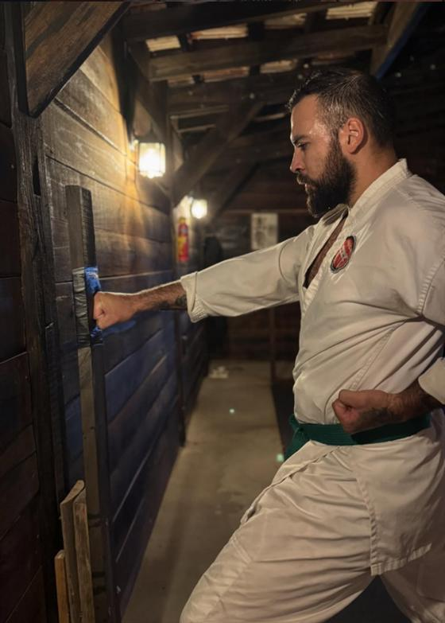
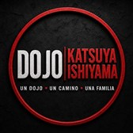
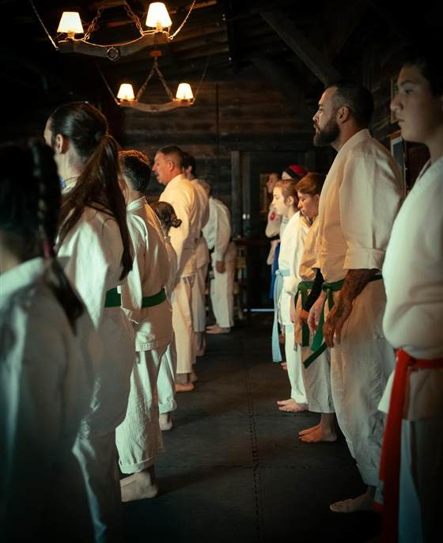
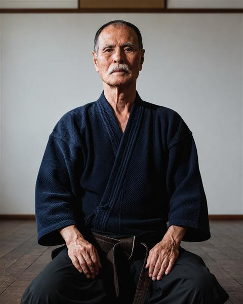
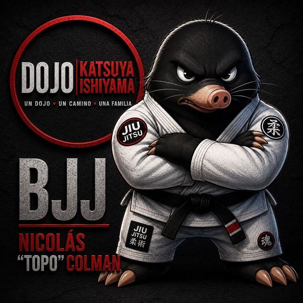
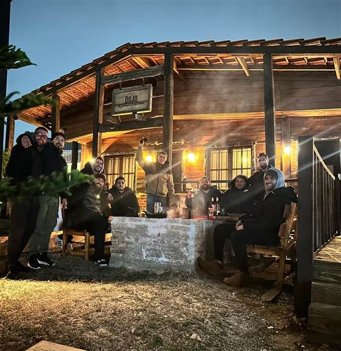
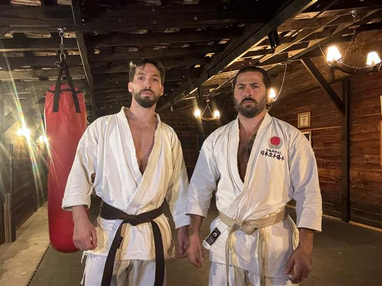
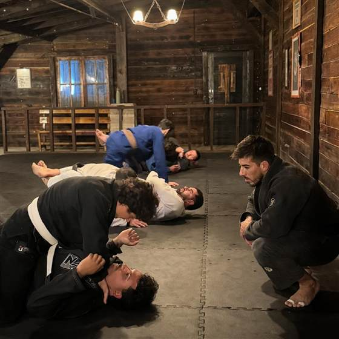
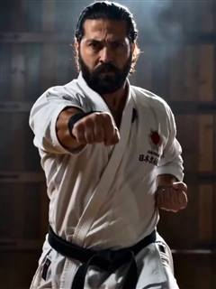
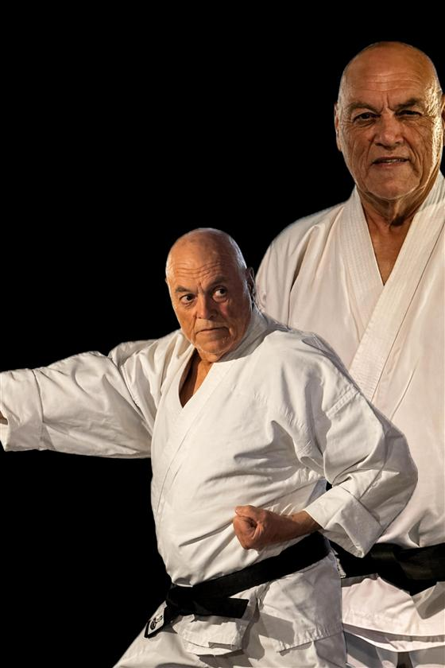

空手道
Karate Shotokan
De pie: kihon, kata y kumite. La vía tradicional, con el Sensei Nicolás Pereira.

Centro de Artes Marciales y Salud Integral · Altos de la Laguna, Maldonado
Un dojo · Un camino · Una familia



De pie: kihon, kata y kumite. La vía tradicional, con el Sensei Nicolás Pereira.

En el suelo: control y sumisión, el arte de la suavidad. Con Nicolás “Topo” Colman.



La clase de prueba es sin costo y no requiere experiencia previa. Vení con ropa cómoda.
Clases grupales presenciales. Para clases particulares, mirá la pestaña Clases.
¿Dudas con un horario? EscribinosUno a uno con el maestro. El plan, el ritmo y los objetivos son tuyos: es la forma más rápida de progresar, y la única donde cada corrección es para vos. Ideal para preparar un examen de grado, retomar después de una pausa o entrenar a tu horario.
Cupos y valor a coordinar según disponibilidad.
Dos disciplinas, un solo pase. La formación completa del artista marcial: de pie con el karate, en el suelo con el jiu-jitsu. Consultá el valor por WhatsApp.
Consultar por el Full Pass
Maldonado, 1987. Empezó las artes marciales a los siete años y a los quince se especializó en Shotokan. Su 5.º Dan fue otorgado por el maestro japonés Katsuya Ishiyama, de quien es representante de Ishiyama Ha para Uruguay. Durante unos dieciséis años se formó en la JKA de la mano del Sensei Miguel Guerra, uno de los pioneros del Shotokan en Uruguay y en Maldonado. Completó su formación en seminarios con Nitsuo Inoue, Masaru Kamino y otros referentes del karate tradicional. Es autor de El Samurái Contemporáneo.
Maldonado, 1989. Inició su camino en el jiu-jitsu brasilero en 2016. Cinturón negro e instructor, formado en la Academia Ratao bajo la dirección del profesor Ricardo Pinheiro, donde desarrolló una base técnica y competitiva sólida. Como deportista representó a Uruguay en competencias nacionales e internacionales, con podios y primeros puestos en Uruguay, Brasil y Argentina. Hoy combina la competencia con la formación de nuevos practicantes.

Otro gran pilar en el camino de Nicolás. Lo formó durante unos dieciséis años en la JKA, y es uno de los pioneros del Shotokan en Uruguay y, sin dudas, en Maldonado. En 2025 le entregó su cinturón, un gesto que sella esa transmisión.
El primer producto del dojo: el libro del Sensei. Podés reservar tu ejemplar de la primera edición desde ahora.
Un libro sobre disciplina, filosofía japonesa y fortaleza interior, y cómo llevar esos principios del tatami a la vida de todos los días. No es teoría: es el camino del Budō escrito por un maestro en activo.
Lecturas recomendadas para acompañar el camino.
Los cinco preceptos que Funakoshi dejó al Shotokan. Se recitan al cerrar la clase.